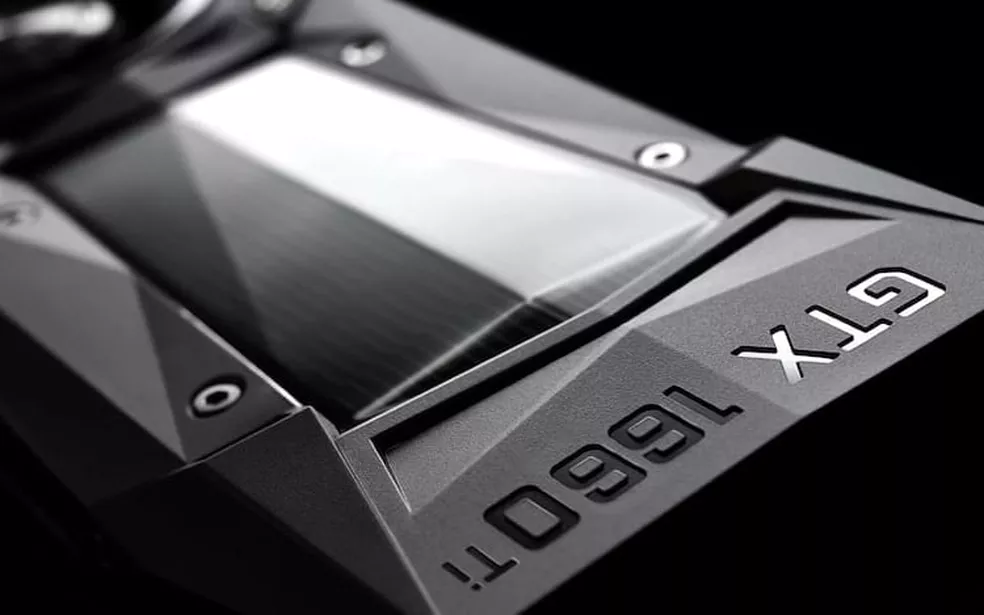
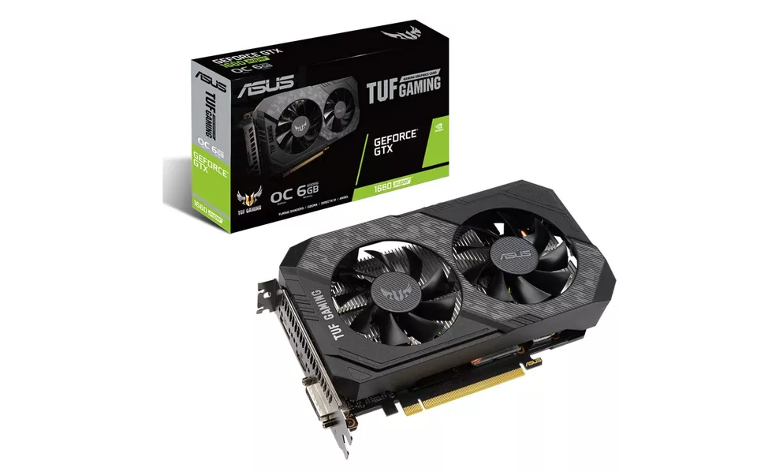
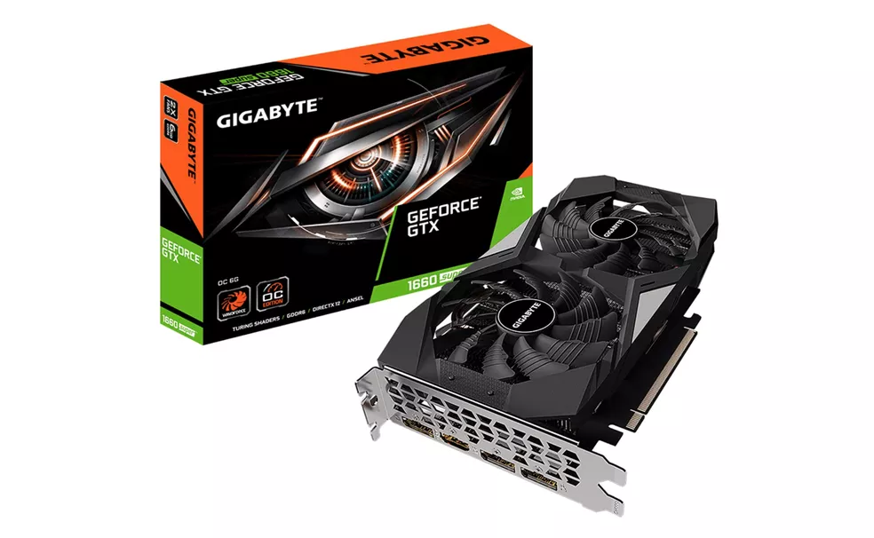
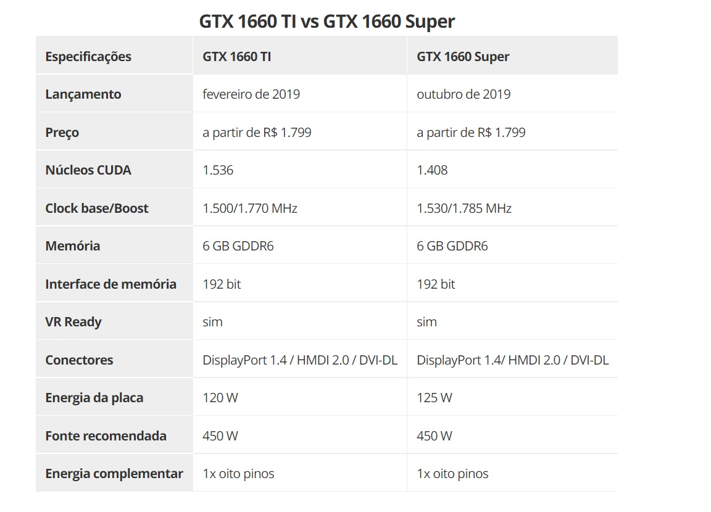

GTX 1660 Super vs GTX 1660 TI: compare as placas de vídeo Nvidia
Placas de 2019 têm especificações similares e prometem bom desempenho em jogos em Full HD.
Compare as GTX 1660 Super e GTX 1660 TI e veja qual é a melhor GPU para você.
GTX 1660 Super e
GTX 1660 TI são placas de vídeo da Nvidia que foram lançadas em
2019. As duas chegaram para o público com um intervalo de oito meses de diferença, e
ambas continuam sendo soluções interessantes para quem procura uma GPU mais barata
capaz de executar jogos modernos. Os modelos trazem um bom volume de memória e
prometem performance para games em Full HD com níveis de textura elevados.
Atualmente, as placas podem ser encontradas no mercado nacional por valores que partem
dos R$ 1.799. Por já terem um certo tempo de mercado, GTX 1660 Super e GTX 1660 TI
estão disponíveis em versões de diversas fabricantes parceiras da Nvidia, o que faz com que
exista uma boa variedade de designs e soluções térmicas no mercado brasileiro. A seguir, o
TechTudo compara as especificações das placas de vídeo para te ajudar a decidir em qual
modelo investir.

Com um intervalo curto entre seus lançamentos e sendo duas placas da arquitetura Turing,
não existem muitas diferenças em relação às especificações das GPUs. Mesmo que haja um
ou outro item de destaque para uma delas, a tendência é que os modelos ofereçam experiências
bastante semelhantes aos usuários.
Enquanto a GTX 1660 TI conta com mais núcleos CUDA
, a GTX 1660 Super promete entregar
um clock um pouco mais elevado. Quanto às memórias, as duas placas oferecem 6 GB no padrão
GDDR6
, que é um dos mais avançados do segmento.
As duas placas prometem oferecer suporte a múltiplos monitores e a resoluções de até 7680 x 4320,
além de frequências de até 120 Hz. Os dois modelos não oferecem suporte aos novos recursos de
Ray Tracing e DLSS, que por sua vez só estão presentes em placas da linha RTX entre os modelos
da Nvidia.

Com tamanha similaridade em suas especificações, a tendência seria mesmo que as placas entregassem
um nível de performance muito parecido. Isso pode ser verificado quando analisamos testes de sites
especializados em benchmarks.
Na velocidade efetiva, os testes apontam uma vantagem de 8% para a GTX 1660 TI, enquanto em jogos,
a vantagem da placa tende a ser de apenas 2%. Como mencionado anteriormente, as GPUs são indicadas
para jogos em Full HD, prometendo desempenho até mesmo para games competitivos populares — nos
quais é interessante atingir uma taxa de quadros acima dos 100
FPS.
O consumo é mais um ponto no qual as placas são muito similares, com uma diferença sutil. A GTX 1660
Super, segundo a fabricante, requer 5 W a mais que o modelo lançado anteriormente.
As semelhanças não param por aí, uma vez que as duas placas utilizam um conector complementar de oito
pinos para energia e têm como fonte recomendada uma PSU de ao menos 450 W.

As duas placas oferecem suporte a API
DirectX
12 e à realidade virtual. Além disso, ainda há compatibilidade
com os principais recursos do software que gerencia os drivers para jogos da Nvidia.
As placas têm aparecido no mercado brasileiro por valores a partir dos R$ 1.799. Os dois modelos ainda
podem ser facilmente encontrados em versões de diversas fabricantes parceiras da Nvidia.
Para quem quer economizar ainda mais, vale considerar modelos usados, uma vez que muitos usuários trocaram
as placas da linha GTX por modelos da série RTX. Isso faz com que exista uma boa oferta de GTX 1660 TI e
GTX 1660 Super usadas.
Considerando o cenário atual, no qual as placas aparecem por praticamente o mesmo preço, a aquisição da
GTX 1660 TI acaba fazendo mais sentido. Isso porque oferece um pequeno ganho quando consideramos
desempenho e ainda consome um pouco
menos de energia.
Como dito antes, a tendência é que as placas ofereçam uma performance muito similar. Dessa forma, seja qual
for a escolha do usuário, a experiência em jogos e em aplicações que exploram os recursos da GPU deve ser
muito parecida.
